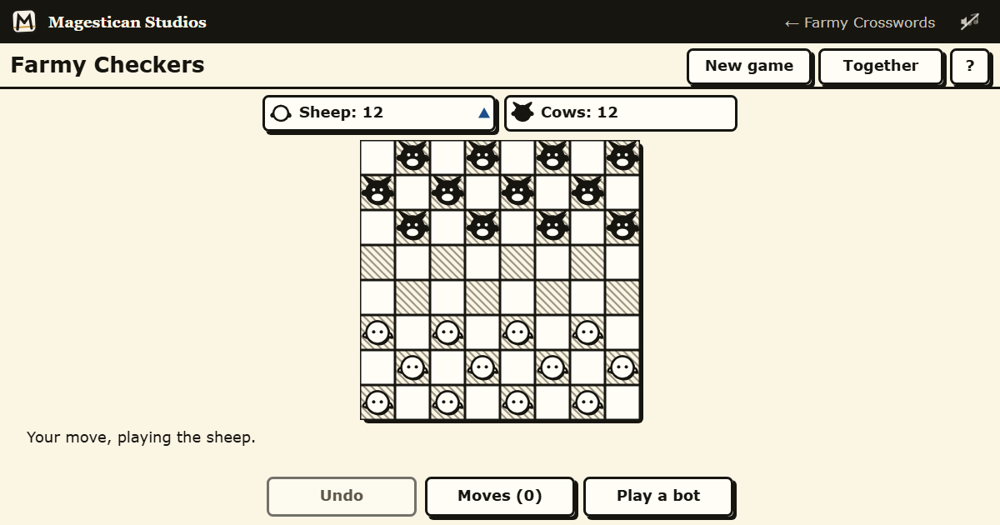

Farmy Checkers
Twelve sheep against twelve cows, in pieces you can read across the room, with no clock anywhere near the board.
Play Farmy Checkers in your browser →

English draughts, played properly
An eight by eight board, twelve pieces a side, and the rules the game is actually played by rather than a simplified version of them. Men move and capture forwards. Captures are compulsory — if a jump is available you have to take it, which is the rule that turns draughts from shuffling into a game of laying traps. A jump that leaves you able to jump again keeps going in the same turn, so a single move can clear three pieces off the board. Reach the far rank and your piece is crowned, and a king moves and captures in both directions.
There is no clock
Nothing here counts down. No timer on a move, no timer on the game, and no bar draining at the edge of the screen while you look for the fork. You can stop in the middle of a turn and come back to it.
Sheep and cows, because a shape beats a colour
The two sides are different animals rather than two colours of the same disc. That is not decoration: a shape is far easier to tell apart than a colour on a phone in bright sunlight, or for anyone with a colour vision deficiency, and it means a glance at the board tells you who owns what. A crowned king is visibly crowned rather than being the same piece with a slightly different marking on it.
The pieces are drawn large, the board is high contrast, and nothing you need to read is set in small type.
An opponent that plays at your level
The computer plays to give you a game rather than to demonstrate that it can win. It adjusts to you, which is the difference between a board you come back to and one you close after two rounds.
Or play with somebody
Start a room and you get a link. Send it to whoever you want to play and they open it in their browser — no signup, no download, and the two browsers talk to each other directly rather than through a server that keeps your game.
No account, no sign-in, nothing kept
There is no account to make, nothing to verify and nothing to delete afterwards. The site sets no cookies and keeps anonymous counts only.
The other board games
The same big pieces and the same absent clock, in Farmy Chess and Farmy Ludo. For words instead, Farmy Crosswords holds a crossword, a wordle, a spelling bee, connections and strands, and Farmy Scrabble is its own board.